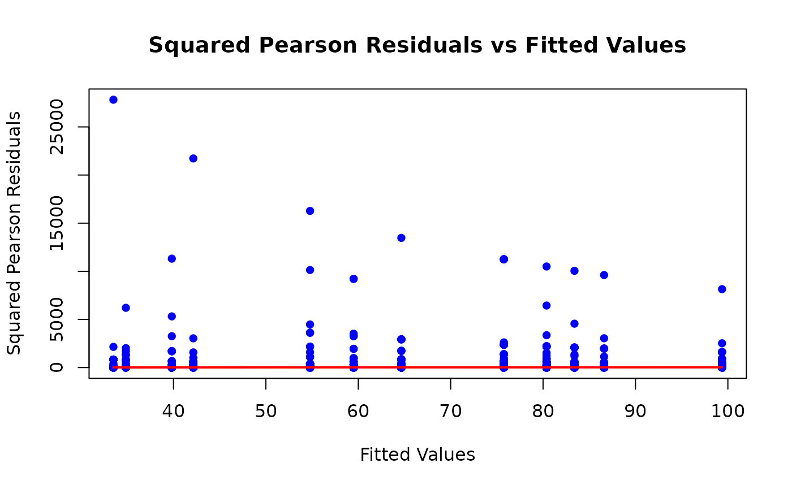
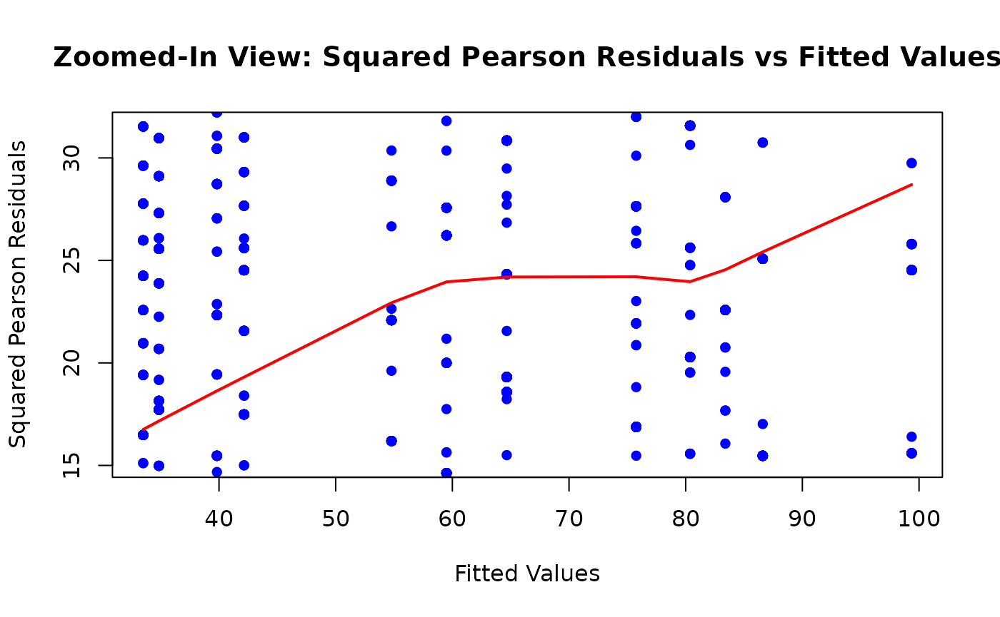

`children` Data Demo: Overdispersion in Poisson Regression and Linear Contrasts
children.Rmd
# Prepare data
data(children)
children$household_income <- factor(children$household_income,
levels = c(
"$0 to $10,000", "$10,001 to $20,000", "$20,001 to $30,000",
"$30,001 to $40,000", "$40,001 to $50,000", "$50,001 to $60,000",
"$60,001 to $75,000", "$75,001 to $100,000", "$100,001 to $150,000",
"$150,001 to $200,000", "$200,001 to $250,000", "$250,001 or more"
)
)
label(children$household_income) <- "Household Income"Poisson Regression
Suppose we want to model the number of books a child owns as a function of their household’s income. Because the response is a count, linear regression is not ideal: counts are non-negative, often skewed, and their variance typically changes with the mean. Poisson regression addresses this and provides inference on multiplicative (relative) effects.
We model the number of children’s books () as a function of household income ().
Model:
Here, and the canonical log link ensures .
The Poisson GLM implies the mean-variance relationship:
Under this model, coefficients are estimated by maximizing the Poisson log-likelihood; exponentiated coefficients correspond to rate ratios relative to a reference income level.
We fit a Poisson generalized linear model (GLM) with a log link:
mdl_pois <- glm(child_num_books ~ household_income,
data = children,
family = poisson(link = "log")
)
tbl_regression(mdl_pois, exponentiate = TRUE)| Characteristic | IRR | 95% CI | p-value |
|---|---|---|---|
| Household Income | |||
| $0 to $10,000 | — | — | |
| $10,001 to $20,000 | 1.19 | 1.16, 1.22 | <0.001 |
| $20,001 to $30,000 | 1.04 | 1.02, 1.07 | 0.001 |
| $30,001 to $40,000 | 1.26 | 1.23, 1.29 | <0.001 |
| $40,001 to $50,000 | 1.64 | 1.60, 1.67 | <0.001 |
| $50,001 to $60,000 | 1.78 | 1.74, 1.82 | <0.001 |
| $60,001 to $75,000 | 1.93 | 1.89, 1.97 | <0.001 |
| $75,001 to $100,000 | 2.26 | 2.22, 2.31 | <0.001 |
| $100,001 to $150,000 | 2.40 | 2.35, 2.45 | <0.001 |
| $150,001 to $200,000 | 2.49 | 2.44, 2.54 | <0.001 |
| $200,001 to $250,000 | 2.59 | 2.53, 2.64 | <0.001 |
| $250,001 or more | 2.97 | 2.91, 3.03 | <0.001 |
| Abbreviations: CI = Confidence Interval, IRR = Incidence Rate Ratio | |||
The confidence intervals here are extremely narrow. Should we expect that? Poisson regression assumes the variance equals the mean within each group (the equidispersion assumption). If the data are overdispersed (variance > mean), standard errors will be underestimated and CIs too tight.
If the equidispersion assumption holds, the model-based standard errors and CIs are appropriate. However, if the data are overdispersed, Poisson standard errors are too small and CIs too narrow.
A Quick Variance Diagnostic: Pearson Residuals
The Pearson residual for observation is:
where is the variance function. For the Poisson GLM, , so:
Key property: If the mean is correctly specified and the variance follows the Poisson mean-variance relationship, then:
Thus, plotting squared Pearson residuals against fitted values should hover around a horizontal line at 1. Systematic deviations indicate variance misspecification (such as overdispersion).
fitted_values <- predict(mdl_pois, type = "response")
sq_pearson_residuals <- (residuals(mdl_pois, type = "pearson"))^2
# Plot squared Pearson residuals vs fitted values
plot(fitted_values, sq_pearson_residuals,
xlab = "Fitted Values",
ylab = "Squared Pearson Residuals",
main = "Squared Pearson Residuals vs Fitted Values",
pch = 16, col = "blue")
# Add a smoother to the plot
smooth <- lowess(fitted_values, sq_pearson_residuals)
lines(smooth, col = "red", lwd = 2)
# Zoom in on the plot
ylim <- c(min(smooth$y) * 0.9, max(smooth$y) * 1.1)
plot(fitted_values, sq_pearson_residuals,
xlab = "Fitted Values",
ylab = "Squared Pearson Residuals",
main = "Zoomed-In View: Squared Pearson Residuals vs Fitted Values",
pch = 16, col = "blue", ylim = ylim)
lines(lowess(fitted_values, sq_pearson_residuals), col = "red", lwd = 2)
A lowess (smoothed) curve drifting well above 1 (and/or a large ) is consistent with overdispersion.
Modeling Overdispersed Counts
Common approaches include:
- Quasi-Poisson (variance proportional to the mean, rather than equal),
- Negative binomial (variance quadratic in the mean),
- Robust (sandwich) standard errors for the Poisson model.
These differ in how they alter the variance and in what they assume about the data-generating process.
Quasi-Poisson
Here, we keep the Poisson mean model and link, but allow a free dispersion parameter : Estimation proceeds via quasi-likelihood. Point estimates match the Poisson GLM, but standard errors are inflated by , where is often the Pearson chi-square divided by residual degrees of freedom. This directly widens confidence intervals and adjusts p-values.
mdl_quasi <- glm(child_num_books ~ household_income,
data = children,
family = quasipoisson(link = "log")
)
tbl_regression(mdl_quasi, exponentiate = TRUE)| Characteristic | IRR | 95% CI | p-value |
|---|---|---|---|
| Household Income | |||
| $0 to $10,000 | — | — | |
| $10,001 to $20,000 | 1.19 | 0.92, 1.54 | 0.2 |
| $20,001 to $30,000 | 1.04 | 0.82, 1.33 | 0.8 |
| $30,001 to $40,000 | 1.26 | 1.00, 1.60 | 0.056 |
| $40,001 to $50,000 | 1.64 | 1.31, 2.06 | <0.001 |
| $50,001 to $60,000 | 1.78 | 1.42, 2.23 | <0.001 |
| $60,001 to $75,000 | 1.93 | 1.56, 2.40 | <0.001 |
| $75,001 to $100,000 | 2.26 | 1.85, 2.79 | <0.001 |
| $100,001 to $150,000 | 2.40 | 1.97, 2.95 | <0.001 |
| $150,001 to $200,000 | 2.49 | 2.03, 3.09 | <0.001 |
| $200,001 to $250,000 | 2.59 | 2.06, 3.26 | <0.001 |
| $250,001 or more | 2.97 | 2.41, 3.69 | <0.001 |
| Abbreviations: CI = Confidence Interval, IRR = Incidence Rate Ratio | |||
Note how the confidence intervals widen relative to the Poisson fit.
Negative Binomial
Here, we model the data as coming from a Negative Binomial distribution, which yields a variance that grows quadratically with the mean: with dispersion . The mean model remains:
# Compute robust SEs with sandwich package
vcov <- sandwich::vcovHC(mdl_pois, type = "HC0")
tbl_regression(mdl_pois, tidy_fun = gtsummary::tidy_robust,
vcov = vcov, exponentiate = TRUE)| Characteristic | IRR | 95% CI | p-value |
|---|---|---|---|
| Household Income | |||
| $0 to $10,000 | — | — | |
| $10,001 to $20,000 | 1.19 | 0.90, 1.57 | 0.2 |
| $20,001 to $30,000 | 1.04 | 0.81, 1.34 | 0.8 |
| $30,001 to $40,000 | 1.26 | 0.97, 1.63 | 0.082 |
| $40,001 to $50,000 | 1.64 | 1.26, 2.12 | <0.001 |
| $50,001 to $60,000 | 1.78 | 1.37, 2.29 | <0.001 |
| $60,001 to $75,000 | 1.93 | 1.52, 2.45 | <0.001 |
| $75,001 to $100,000 | 2.26 | 1.79, 2.86 | <0.001 |
| $100,001 to $150,000 | 2.40 | 1.91, 3.02 | <0.001 |
| $150,001 to $200,000 | 2.49 | 1.96, 3.15 | <0.001 |
| $200,001 to $250,000 | 2.59 | 2.00, 3.34 | <0.001 |
| $250,001 or more | 2.97 | 2.33, 3.77 | <0.001 |
| Abbreviations: CI = Confidence Interval, IRR = Incidence Rate Ratio | |||
How do you choose?
- Fix underestimation of uncertainty, same mean model:
- Use quasi-Poisson or robust SEs. They typically yield similar results, but are conceptually distinct.
- Quasi-Poisson also returns an estimated dispersion parameter ().
- Need a full distribution for counts or variance grows quadratically with the mean:
- Use negative binomial regression. This is useful for simulation, AIC-based model selection, or prediction intervals.
- Diagnostics:
- Check the estimated dispersion parameter () using Pearson-based methods.
- Plot squared Pearson residuals vs. fitted values and look for a horizontal trend around 1.
- Compare inferential conclusions across methods. If both negative binomial and quasi-Poisson materially change inference compared to Poisson, it strongly suggests that the Poisson equidispersion assumption was too restrictive.
- Additional Notes:
- Overdispersion can result from unmodeled heterogeneity (e.g., omitted covariates, clustering), zero-inflation, or temporal/spatial correlation.
- If patterns persist after switching variance models, consider refining the mean structure or using clustered/GLMM approaches.
Interpreting the Coefficients and Using Linear Contrasts
With a log link, coefficients are on the log scale; exponentiating yields rate ratios (RRs). For a given income category versus the reference category (here “$0 to $10,000”), is the multiplicative change in expected book counts.
Sometimes we need comparisons between two non-reference groups. You can either relevel the factor or compute a linear contrast on the original model.
Here’s how we’d do it the naive way, by changing the baseline and redoing the regression:
children$household_income <- relevel(children$household_income, ref = "$50,001 to $60,000")
mdl_relevel <- glm(child_num_books ~ household_income,
data = children,
family = quasipoisson(link = "log")
)
tbl_regression(mdl_relevel, exponentiate = TRUE)| Characteristic | IRR | 95% CI | p-value |
|---|---|---|---|
| Household Income | |||
| $50,001 to $60,000 | — | — | |
| $0 to $10,000 | 0.56 | 0.45, 0.70 | <0.001 |
| $10,001 to $20,000 | 0.67 | 0.54, 0.82 | <0.001 |
| $20,001 to $30,000 | 0.59 | 0.48, 0.71 | <0.001 |
| $30,001 to $40,000 | 0.71 | 0.59, 0.85 | <0.001 |
| $40,001 to $50,000 | 0.92 | 0.78, 1.09 | 0.3 |
| $60,001 to $75,000 | 1.09 | 0.93, 1.27 | 0.3 |
| $75,001 to $100,000 | 1.27 | 1.11, 1.46 | <0.001 |
| $100,001 to $150,000 | 1.35 | 1.18, 1.55 | <0.001 |
| $150,001 to $200,000 | 1.40 | 1.21, 1.62 | <0.001 |
| $200,001 to $250,000 | 1.46 | 1.23, 1.73 | <0.001 |
| $250,001 or more | 1.67 | 1.44, 1.94 | <0.001 |
| Abbreviations: CI = Confidence Interval, IRR = Incidence Rate Ratio | |||
We observe that the $100-150k group has 1.35 (1.18, 1.55) times the expected number of books compared to the $50-60k group.
We can also obtain the same comparison from the original reference group (“$0 to $10,000”) by forming a contrast , where selects the difference between the two relevant category coefficients.
Alternatively, the same information can be derived by computing a contrast using the original model:
contrasts <- list(
"100-150k vs 50-60k" = c(0, 0, 0, 0, 0, -1, 0, 0, 1, 0, 0, 0)
)
# Get the difference in coefficients
diff <- coef(mdl_quasi) %*% contrasts[[1]]
# And the standard error of the estimator
se <- sqrt(t(contrasts[[1]]) %*% vcov(mdl_quasi) %*% contrasts[[1]])
# Then we can do our inference:
z <- diff / se
p_value <- 2 * (1 - pnorm(abs(z)))
exp_diff <- exp(diff)
data.frame(
Contrast = "100-150k vs 50-60k",
Estimate = exp_diff,
CI = paste0("(", round(exp(diff - 1.96 * se), 2), ", ", round(exp(diff + 1.96 * se), 2), ")"),
z = z,
p_value = p_value
)
#> Contrast Estimate CI z p_value
#> 1 100-150k vs 50-60k 1.350932 (1.18, 1.54) 4.429499 9.445218e-06This RR and CI match what you get from the re-leveled model (down to some rounding error), without changing the baseline each time.
Takeaways
Poisson GLM Assumption: The Poisson GLM assumes . If the mean and variance are correctly specified, squared Pearson residuals should hover around 1.
Overdispersion Impact: Ignoring overdispersion inflates type I error rates. This can lead to overly narrow confidence intervals and underestimated standard errors.
-
Addressing Overdispersion:
- Use quasi-Poisson or robust standard errors to fix inference while keeping the same mean model.
- Use negative binomial regression to adjust the variance model parametrically.
Linear Contrasts: Linear contrasts allow direct comparisons between any two income groups without re-leveling the factor. This avoids the need to refit the model for each comparison.